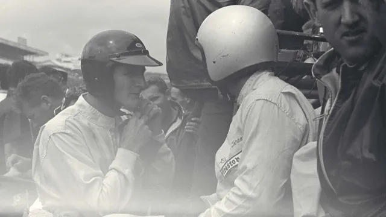
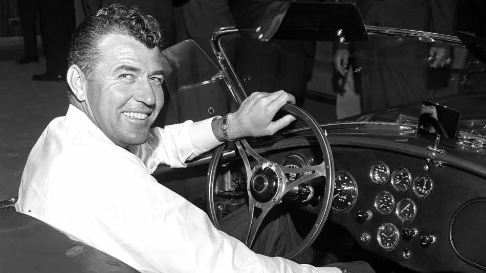

Leyenda de las carreras
Ken Miles

Ken Miles nació en Sutton Coldfield, en Birminghan (Inglaterra), aunque pasó la mayor parte de su vida en Estados Unidos. Con apenas 11 años, empezó a competir en motos y a montar y desmontar todo aparato con motores y ruedas. A los 15 años dejó el colegio y empezó a trabajar en la Wolseley Motors. Competía en pruebas nacionales al volante de cualquier tipo de vehículo, tanto en circuito como en subidas de montaña.Movido por el crecimiento de la industria automovilística en Estados Unidos, por el nacimiento de carreras que pronto se convertirían en leyenda como las 12 Horas de Sebring y en busca de nuevas oportunidades como piloto y mecánico, Miles – que ya estaba casado y tenía un hijo, Peter, se mudó a Los Ángeles. Empezó a trabajar en Gogh Industries, el distribuidor de MG para el Sur de Carlifornia y, al mismo tiempo, corrió con cierto éxito con un MG propio, con el que consiguió nada menos que 14 victorias.
El hombre que cambió la historia de Ford
Carroll shelby

Carroll Hall Shelby nació el 11 de enero de 1923 en Leesburg, Texas, en el seno de una familia modesta formada por Warren Hall Shelby, un cartero rural, y su esposa Eloise. Al inicio de la década, la relación de Shelby y Ford era genial, y decidieron competir en Le Mans debido a la caída de ventas de sus coches y las expectativas por un reconocimiento mundial con una victoria.Para ello, debían batir a Ferrari en su terreno y crear un deportivo de alto rendimiento. Carroll Shelby fue encargado durante varios años del proyecto con el famoso Ford GT40 en sus distintas versiones. El coche se estrenó venciendo en los 2.000 kms de Daytona, más tarde las 24 Horas de Daytona y en 1966, se alzó con un triple triunfo en las 24 Horas de Le Mans. Una carrera que dominaría cada año hasta 1969 y que convirtió al GT40 en un mito. En 1967 también comenzó la producción de los Ford Shelby Mustang, con una placa de identificación especial con el logo de la serpiente de la compañía y que volvió con la quinta generación del Ford Mustang en 2005.
Leyendas del automovilismo
personajes influyentes
Karl Friedrich Benz
Henry Ford

Henry Ford pasó a la historia por ser el inventor del coche más práctico hasta la época. Tal fue el éxito que casi la mitad de los Estados Unidos tenían dicho coche, el Modelo T. Para cubrir la demanda, Ford creó la planta Highland Park que constituyó la primera línea de producción masiva del mundo, en 1913.
John Boyd Dunlop

En 1887, desarrolló el primer neumático con cámara de aire. Fundó la compañía Dunlop Tyres que más tarde sería conocida como Dunlop Rubber Company. La producción comercial empezó a finales de 1890 en Belfast.
Elon Musk

Musk es conocido, aparte de otros logros que no tienen que ver con el automóvil, por haber creado el primer automóvil eléctrico viable para producción en la era moderna, el Tesla Roadster.
Nicolas-Joseph Cugnot
Inventor francés a quien se le atribuye la invención del primer vehículo autopropulsado o automóvil. Realizó pruebas de modelos de vehículos impulsados por motores de vapor para el Ejército Francés, pensados para arrastrar cañones pesados, tarea que empezó en 1765. Cugnot parece haber sido el primero en transformar el movimiento adelante-atrás de un pistón a vapor en movimiento rotativo. En 1769 consiguió que funcionase una versión de su Fardier à vapeur (“Coche de vapor”).
El hombre que superó los 300 Km/h en una carretera y fue expulsado del país
Smokey Nagata
Eran las 4 de la mañana del 4 de noviembre de 1998. Llovía y hacía mucho frío en la carretera A1. Pese a las condiciones adversas, Kazuhiko Nagata no se lo pensó. Había viajado desde Tokio hasta el Reino Unido solo para eso: pisó a fondo el acelerador de su Toyota Supra dorado de 1.003 CV, y se dispuso a alcanzar las 200 mph (unos 322 km/h). Las malas condiciones climáticas se lo impidieron. Llegó hasta los 312 Km/h, antes de ser detenido por la policía. Lo que ocurriera después, le daba igual. Al menos había cumplido un objetivo: ser el conductor más rápido en una carretera de Reino Unido. Un récord que, suponemos para bien, aún no ha sido superado.
El rey de las calles
Ken Block
 La historia de Block se remonta al año 2005 , cuando entró al equipo Vermont SportCar a bordo de un Subaru WRX STi. Tiempo después, también accede a los llamados X Games, que son una serie de deportes extremos televisados por ESPN.Su desempeño hasta estos años había sido notable, con medalla de plata para los X Games, 19 podios y 8 medallas en rally. También fue parte de algunas fechas del WRC y otras categorías similares a lo largo del mundo, entre ellas México.Entre 2009 y 2018 , Block filmó una serie de videos llamados Gymkhana , que se caracterizan por ser una combinación de rally con maniobras dignas de una película de Hollywood. Esto tomó lugar en varias locaciones alrededor del mundo, incluido Guanajuato.
Block falleció a los 55 años en un accidente cuando la moto de nieve que conducía por una pronunciada pendiente volcó y le cayó encima, informó la oficina de la comisaría del condado de Wasatch en Utah, Estados Unidos.
"Él tuvo una influencia masiva en todo lo que tocaba", dijo la Asociación de Rally de Estados Unidos, mientras que el excampeón mundial de Fórmula 1, Jenson Button, lo calificó como "un talento que hizo muchísimo por nuestro deporte".
La historia de Block se remonta al año 2005 , cuando entró al equipo Vermont SportCar a bordo de un Subaru WRX STi. Tiempo después, también accede a los llamados X Games, que son una serie de deportes extremos televisados por ESPN.Su desempeño hasta estos años había sido notable, con medalla de plata para los X Games, 19 podios y 8 medallas en rally. También fue parte de algunas fechas del WRC y otras categorías similares a lo largo del mundo, entre ellas México.Entre 2009 y 2018 , Block filmó una serie de videos llamados Gymkhana , que se caracterizan por ser una combinación de rally con maniobras dignas de una película de Hollywood. Esto tomó lugar en varias locaciones alrededor del mundo, incluido Guanajuato.
Block falleció a los 55 años en un accidente cuando la moto de nieve que conducía por una pronunciada pendiente volcó y le cayó encima, informó la oficina de la comisaría del condado de Wasatch en Utah, Estados Unidos.
"Él tuvo una influencia masiva en todo lo que tocaba", dijo la Asociación de Rally de Estados Unidos, mientras que el excampeón mundial de Fórmula 1, Jenson Button, lo calificó como "un talento que hizo muchísimo por nuestro deporte".